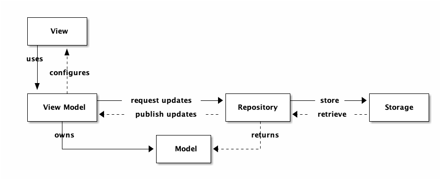

Advanced Swift Ui
Table of Contents
1 MVVM
1.1 Design pattern
MVVM 的概念最早應該是在 2005 年由 Microsoft的John Gossman提出來的，它的概念是，整個 Swift project 會拆分成三個部份: View、ViewModel、Model，其中 View 的角色就是單純的視覺元件，像是按鈕、文字標籤等等，在 View 裡面不會有邏輯、狀態等等，單純就是個呈現資料的元件。而要讓 View 呈現資料，最直覺的方式，就是把 View 跟 Model 做綁定，讓 View 的元件跟著 Model 一起做變化。但這樣會有個問題，就是通常 Model 來的資料，並不是簡單就能轉換成 View 的樣式的，這時候就需要有個物件，介在 View 跟 Model 的中間，這個物件會掌管這些跟 View 高度相關的邏輯的操作，像是轉換 Date 物件變成人看得懂的文字格式等，稱之為 ViewModel。上面的概念可以畫成這樣的資料流：
Figure 1: MVVM Architecture
在 iOS 開發上，依照上述 MVVM 的定義，ContentView 變成一個單純的 View，而我們會另外產生一個 ViewModel 來負責 presentational logic 跟部份的 controller logic。所以在View裡面，就只會有：
- View logic，所有跟呈現有關的 Code
- 綁定 ViewModel
而在 ViewModel 裡面，則是負責兩個部份：
- Controller logic，如 pagination, error handling,… etc
- Presentation logic，提供接口讓 View 綁定(binding)(提供適合在View中呈現的資料)
開發上，一旦 View 綁定好 ViewModel 的資料，在撰寫商業邏輯的時候，就可以不用管包括動畫、轉場、main thread 等等跟 View 相關的問題，因為分工明確所以就不會有寫起來綁手綁腳的感覺。更棒的是，並且因為 ViewModel 是一個單純的、沒有相依於 View 的物件，所以要做測試簡單多了！
資料來源: 歡迎來到真實世界 - 原來是那個傳說中的MVVM阿
1.2 What is the idea behind MVVM
- Model
- Business logic
- UI Independent
- Business logic
- View
- Presentation
- User interaction
- Presentation
- ViewModel
- Presentation logic
- Glue between Model and View
- Presentation logic
- 為什麼要拆成三部份(What does it solve?)
- MVC - Massive View Controller
- Testability
- Code organization
- Code reusability
- MVC - Massive View Controller
- Limitations / Cons
- Requires binding
- Potential for boilerplate code
- Overkill for simple views and logic
- Doesn’t cover every case
- Requires binding
1.3 DEMO
以“推薦書單”的 APP 為例:
Model: 包含書名、作者、出版社….，而實際的資料來源可能是雲端資料庫(Firebase)、Web API、本機資料庫(Core data)。
1: struct Book { 2: let title: String 3: let author: String 4: let dateReleased: String 5: let publishCamp: String 6: let publishCity: String 7: let isFavorite: Bool 8: }
- View: 在 APP 畫面上呈現 Model 中資料的元件，如 Text, Image, Button, List…..
ViewModel: 將 Model 中的資料取出，供 View 呈現，或是接受 View 輸入的資料，存回 Model。以“推薦書單 APP”為例，其 ViewModel 可能包含如下 struct:
1: struct BookDetailViewModel { 2: var book: Book 3: 4: var isFavorite: Bool 5: 6: init(book: Book) { 7: self.book = book 8: self.isFavorite = false 9: } 10: 11: var title: String { 12: return self.book.title 13: } 14: 15: var author: String { 16: return self.book.author 17: } 18: 19: var dateReleased: String { 20: return self.book.dateReleased 21: } 22: 23: // 呈現時要求以 遠流出版社(台北市) 的格式來呈現 24: var publisher: String { 25: let output = self.book.publishCamp + "(" + self.book.publishCity + ")" 26: return output 27: } 28: }
從 Model 中可以看到書籍的記錄欄位只有“出版社”(publishCamp)和“出版地點”(publishCity)，但若 app 對顯示結果的格式要求為“出版社(出版地點)”，則可以在 ViewModel 中來處理。
此外，如果在 View 上有一個 Favorite Button，則當 user 點了 Favorite 後，ViewModel 應負責將 struct 中的 isFavorite 改存 True，並回存至 Model 中。Model 的資料只能透過 ViewModel 來新增刪除，View 無法直接染指。
Model 與 UI 完全無關，單純用來儲存資料，ViewModel 為 Model 與 View 溝通的橋樑。
1.4 Model 要用 Struct 或是 Class
- Struct 與 Class 的不同性質
首先，當我們指派 (assign) 一個實體給一個辨識符（identifier，也就是變數／常數名）的時候，如果該實體是 struct 的話，該辨識符所容納的會是該實體的所有內容；但如果它是 class 的話，這個辨識符就只會容納存放該實體的位址：
1: // 用 struct 定義 Dog。 2: struct Dog { 3: var name = "Bart" 4: } 5: // 整個 Dog 實體都會被存到 myDog 裡。 6: var myDog = Dog() 7: // 用 class 定義 Cat。 8: class Cat { 9: var name = "Mimi" 10: } 11: // myCat 只會儲存 Cat 實體的位址。Cat 實體本身會被存到別的地方。 12: var myCat = Cat()
也就是說，當我們使用辨識符的時候，如果它的型別是 struct 的話，我們在操作的實體都會是本地的。但是當我們在操作 class 型別的辨識符的話，那麼我們實際上是透過辨識符在操作一個遠端的實體。所以，當我們更改這些實體的屬性的時候，它們的行為就不太一樣了：
1: // 使用 struct。 2: var herDog = Dog() { 3: // 如果 herDog 有變動的話就顯示訊息。 4: didSet { 5: print("Her dog is changed!") 6: } 7: } 8: herDog.name = "Starlord" 9: // Her dog is changed! 10: // 使用 class。 11: var herCat = Cat() { 12: didSet { 13: print("Her cat is changed!") 14: } 15: } 16: herCat.name = "Mumu" 17: // 沒有訊息。
怎麼會有這樣的差別呢？因為 herDog 儲存了所有的 Dog 實體內容，所以任何 Dog 實體的屬性的變動，就等於說 herDog 本身有變動。然而，herCat 並沒有儲存 Cat 實體的內容，所以 Cat 實體屬性的變動是在別的地方發生的，且 herCat 本身所儲存的 Cat 實體位址並沒有任何的改變。
由圖1可看出，
- MVVM 中的 Model
1.5 DICE DEMO
1.6 Further Reading Resources
- SwiftUI MVVM Programming with ObservableObject @Published @ObservedObject
- SwiftUI 2.0: MVVM - A Practical Approach
- SwiftUI Tip Calculator Using MVVM Design Pattern
- Understanding MVVM Design Pattern: 講的超清楚
- Video: MVVM SwiftUI - Model View ViewModel Pattern - Getting Started
- Video: https://www.youtube.com/watch?v=LntH6moCuo0
- Video: MVVM in Practice - RWDevCon Session - raywenderlich.com
- GitHub: https://github.com/rebeloper/SwiftUIMVVM.git
2 Review
- Functions: Tasks management project: task listing, adding, removing, editing
- Technoloties: View navigation, variable sharing, data model
參考資料: Building a To-Do List App with SwiftUI, Combine, and Firebase
2.1 Data Model
// // Task.swift // taskManagement // // Created by yen yung chin on 2021/2/18. // import Foundation struct Task: Identifiable { var id = UUID() var title: String var completed: Bool } #if DEBUG let testDataTasks = [ Task(title: "Implement UI", completed: true), Task(title: "Share data", completed: false), Task(title: "Create Chart", completed: false), Task(title: "Connect to Firebase", completed: false), Task(title: "PROFIT!!!", completed: false) ] #endif
2.2 Basic UI
- Change struct name (ContentView.swift)
- right click on struct ContentView
- Refactor
- Rename…: to TaskListView
- The file name on navigator (left panel in Xcode) will be renamed to TaskListView.swift
- right click on struct ContentView
- classify files into the following group
- App
- View
Model

- App
- Create basic UI
- TaskListView.swift
1: // 2: // ContentView.swift 3: // taskManagement 4: // 5: // Created by yen yung chin on 2021/2/16. 6: // 7: 8: import SwiftUI 9: 10: struct TaskListView: View { 11: let tasks = testDataTasks 12: var body: some View { 13: NavigationView { 14: VStack(alignment: .leading, spacing: 10, content: { 15: List(tasks) { task in 16: Image(systemName: "circle") 17: Text(task.title) 18: } 19: HStack(alignment: .center, spacing: 10, content: { 20: Image(systemName: "plus.circle.fill") 21: Text("New Task") 22: }).padding() 23: 24: }).navigationTitle("Tasks") 25: } 26: } 27: } 28: 29: struct ContentView_Previews: PreviewProvider { 30: static var previews: some View { 31: TaskListView() 32: } 33: } 34:
- Extract the task cell
- Grouping the Image and Text with HStack
- cmd+click Htack
- Extract SubView
- Fix the compile error(inject needed variable)
1: // 2: // ContentView.swift 3: // taskManagement 4: // 5: // Created by yen yung chin on 2021/2/16. 6: // 7: 8: import SwiftUI 9: 10: struct TaskListView: View { 11: let tasks = testDataTasks 12: var body: some View { 13: NavigationView { 14: VStack(alignment: .leading, spacing: 10, content: { 15: List(tasks) { task in 16: TaskCell(task: task) 17: } 18: HStack(alignment: .center, spacing: 10, content: { 19: Image(systemName: "plus.circle.fill") 20: Text("New Task") 21: }).padding() 22: 23: }).navigationTitle("Tasks") 24: } 25: } 26: } 27: 28: struct ContentView_Previews: PreviewProvider { 29: static var previews: some View { 30: TaskListView() 31: } 32: } 33: 34: struct TaskCell: View { 35: var task: Task 36: var body: some View { 37: HStack { 38: Image(systemName: "circle") 39: Text(task.title) 40: } 41: } 42: } 43:
- Grouping the Image and Text with HStack
- TaskListView.swift
2.3 MVVM
以MVVM架構來開發project
- ViewModel
- Diagram for now
- Model for the future

- TaskCellViewModel
1: // 2: // TaskCellViewModel.swift 3: // taskManagement 4: // 5: // Created by yen yung chin on 2021/2/20. 6: // 7: 8: import Foundation 9: import Combine 10: 11: class TaskCellViewModel: ObservableObject, Identifiable { 12: @Published var task: Task 13: 14: @Published var completionStateIconName = "" 15: private var cancellables = Set<AnyCancellable>() 16: init(task: Task) { 17: self.task = task 18: $task 19: .map { task in 20: return task.completed ? "checkmark.circle.fill" : "circle" 21: } 22: .assign(to: \.completionStateIconName, on: self) 23: .store(in: &cancellables) 24: } 25: } 26:
- TaskListViewModel
1: // 2: // TaskListViewModel.swift 3: // taskManagement 4: // 5: // Created by yen yung chin on 2021/2/20. 6: // 7: 8: import Foundation 9: import Combine 10: 11: class TaskListMiewModel: ObservableObject { 12: @Published var taskCellViewModels = [TaskCellViewModel]() 13: 14: init() { 15: self.taskCellViewModels = testDataTasks.map { task in 16: TaskCellViewModel(task: task) 17: } 18: } 19: 20: } 21:
- Diagram for now
- View
TaskListView.swift
1: // 2: // ContentView.swift 3: // taskManagement 4: // 5: // Created by yen yung chin on 2021/2/16. 6: // 7: 8: import SwiftUI 9: 10: struct TaskListView: View { 11: @ObservedObject var taskListVM = TaskListMiewModel() 12: 13: var body: some View { 14: NavigationView { 15: VStack(alignment: .leading, spacing: 10, content: { 16: List(taskListVM.taskCellViewModels) { task in 17: TaskCell(taskCellVM: task) 18: } 19: HStack(alignment: .center, spacing: 10, content: { 20: Image(systemName: "plus.circle.fill") 21: Text("New Task") 22: }).padding() 23: 24: }).navigationTitle("Tasks") 25: } 26: } 27: } 28: 29: struct ContentView_Previews: PreviewProvider { 30: static var previews: some View { 31: TaskListView() 32: } 33: } 34: 35: struct TaskCell: View { 36: @ObservedObject var taskCellVM: TaskCellViewModel 37: 38: var body: some View { 39: HStack { 40: Image(systemName: taskCellVM.completionStateIconName) 41: Text(taskCellVM.task.title) 42: } 43: } 44: } 45:
2.4 New task
加入新增task功能，真正的新增功能由ViewModel實作，View負責界面及呼叫該功能
- View
- NewTaskView.swift
1: // 2: // NewTaskView.swift 3: // taskManagement 4: // 5: // Created by yen yung chin on 2021/2/20. 6: // 7: 8: import SwiftUI 9: 10: struct NewTaskView: View { 11: @ObservedObject var taskListVM = TaskListMiewModel() 12: @State var taskTitle: String = "" 13: 14: @Environment(\.presentationMode) var presentation 15: 16: var body: some View { 17: VStack { 18: Text("New Task") 19: .font(.largeTitle) 20: TextField("Enter task name", text: self.$taskTitle) 21: Button(action: { 22: taskListVM.addTask(task: Task(title: self.taskTitle, completed: false)) 23: self.presentation.wrappedValue.dismiss() 24: }, label: { 25: Text("Done") 26: }) 27: Spacer() 28: }.padding() 29: } 30: } 31: 32: struct NewTaskView_Previews: PreviewProvider { 33: static var previews: some View { 34: NewTaskView() 35: } 36: } 37:
- TaskListView.swift
1: // 2: // ContentView.swift 3: // taskManagement 4: // 5: // Created by yen yung chin on 2021/2/16. 6: // 7: 8: import SwiftUI 9: 10: struct TaskListView: View { 11: @ObservedObject var taskListVM = TaskListMiewModel() 12: var body: some View { 13: NavigationView { 14: VStack(alignment: .leading, spacing: 10, content: { 15: List(taskListVM.taskCellViewModels) { task in 16: TaskCell(taskCellVM: task) 17: } 18: 19: 20: HStack(alignment: .center, spacing: 10, content: { 21: Image(systemName: "plus.circle.fill") 22: Button(action: /*@START_MENU_TOKEN@*/{}/*@END_MENU_TOKEN@*/, label: { 23: /*@START_MENU_TOKEN@*/Text("Button")/*@END_MENU_TOKEN@*/ 24: }) 25: Text("New Task") 26: }).padding() 27: 28: .navigationBarTitle("Tasks", displayMode: .inline) 29: 30: .navigationBarItems(trailing: NavigationLink( 31: destination: NewTaskView(taskListVM: taskListVM, taskTitle: ""), 32: label: { 33: Text("New Task") 34: })) 35: 36: }) 37: } 38: } 39: } 40: 41: struct ContentView_Previews: PreviewProvider { 42: static var previews: some View { 43: TaskListView() 44: } 45: } 46: 47: struct TaskCell: View { 48: @ObservedObject var taskCellVM: TaskCellViewModel 49: 50: var body: some View { 51: HStack { 52: Image(systemName: taskCellVM.completionStateIconName) 53: Text(taskCellVM.task.title) 54: } 55: } 56: } 57:
- NewTaskView.swift
- ViewModel
- TaskListViewModel.swift
1: // 2: // TaskListViewModel.swift 3: // taskManagement 4: // 5: // Created by yen yung chin on 2021/2/20. 6: // 7: 8: import Foundation 9: import Combine 10: 11: class TaskListMiewModel: ObservableObject { 12: @Published var taskCellViewModels = [TaskCellViewModel]() 13: 14: init() { 15: self.taskCellViewModels = testDataTasks.map { task in 16: TaskCellViewModel(task: task) 17: } 18: } 19: 20: func addTask(task: Task) { 21: let task = TaskCellViewModel(task: task) 22: self.taskCellViewModels.append(task) 23: } 24: } 25:
- TaskListViewModel.swift
2.5 Delete task
加入swipe進行刪除的功能，真正刪除的功能由ViewModel實作，View負責呼叫
- View
- TaskListView.swift
1: // 2: // ContentView.swift 3: // taskManagement 4: // 5: // Created by yen yung chin on 2021/2/16. 6: // 7: 8: import SwiftUI 9: 10: struct TaskListView: View { 11: @ObservedObject var taskListVM = TaskListMiewModel() 12: var body: some View { 13: NavigationView { 14: VStack(alignment: .leading, spacing: 10, content: { 15: List { 16: ForEach(taskListVM.taskCellViewModels) { task in 17: TaskCell(taskCellVM: task) 18: 19: } 20: .onDelete(perform: { indexSet in 21: taskListVM.deleteTask(indexSet: indexSet) 22: }) 23: } 24: 25: HStack(alignment: .center, spacing: 10, content: { 26: Image(systemName: "plus.circle.fill") 27: Button(action: /*@START_MENU_TOKEN@*/{}/*@END_MENU_TOKEN@*/, label: { 28: /*@START_MENU_TOKEN@*/Text("Button")/*@END_MENU_TOKEN@*/ 29: }) 30: Text("New Task") 31: }).padding() 32: 33: .navigationBarTitle("Tasks", displayMode: .inline) 34: 35: .navigationBarItems(trailing: NavigationLink( 36: destination: NewTaskView(taskListVM: taskListVM, taskTitle: ""), 37: label: { 38: Text("New Task") 39: })) 40: 41: }) 42: } 43: } 44: } 45: 46: struct ContentView_Previews: PreviewProvider { 47: static var previews: some View { 48: TaskListView() 49: } 50: } 51: 52: struct TaskCell: View { 53: @ObservedObject var taskCellVM: TaskCellViewModel 54: 55: var body: some View { 56: HStack { 57: Image(systemName: taskCellVM.completionStateIconName) 58: Text(taskCellVM.task.title) 59: } 60: } 61: } 62:
- TaskListView.swift
- ViewModel
- TaskListViewModel.swift
1:1: // 2: // TaskListViewModel.swift 3: // taskManagement 4: // 5: // Created by yen yung chin on 2021/2/20. 6: // 7: 8: import Foundation 9: import Combine 10: 11: class TaskListMiewModel: ObservableObject { 12: @Published var taskCellViewModels = [TaskCellViewModel]() 13: 14: init() { 15: self.taskCellViewModels = testDataTasks.map { task in 16: TaskCellViewModel(task: task) 17: } 18: } 19: 20: func addTask(task: Task) { 21: let task = TaskCellViewModel(task: task) 22: self.taskCellViewModels.append(task) 23: } 24: 25: func deleteTask(indexSet: IndexSet) { 26: self.taskCellViewModels.remove(atOffsets: indexSet) 27: } 28: } 29:
- TaskListViewModel.swift
2.6 enum v.s. picker
加入task的priority欄位(enum)
- Model
以enum來表示task的不同優先權
- Model.swift
1: // 2: // Task.swift 3: // taskManagement 4: // 5: // Created by yen yung chin on 2021/2/18. 6: // 7: 8: import Foundation 9: 10: enum TaskPriority: String, CaseIterable { 11: case high 12: case medium 13: case low 14: } 15: 16: struct Task: Identifiable { 17: var id = UUID() 18: var title: String 19: var priority: TaskPriority //只有三種可能性 20: var completed: Bool 21: } 22: 23: #if DEBUG 24: let testDataTasks = [ 25: Task(title: "Implement UI", priority: .medium, completed: true), 26: Task(title: "Share data", priority: .high, completed: false), 27: Task(title: "Create Chart", priority: .medium, completed: false), 28: Task(title: "Connect to Firebase", priority: .high, completed: false), 29: Task(title: "PROFIT!!!", priority: .high, completed: false) 30: ] 31: #endif 32:
- Model.swift
- View
- TaskListView.swift
1: // 2: // ContentView.swift 3: // taskManagement 4: // 5: // Created by yen yung chin on 2021/2/16. 6: // 7: 8: import SwiftUI 9: 10: struct TaskListView: View { 11: @ObservedObject var taskListVM = TaskListMiewModel() 12: var body: some View { 13: NavigationView { 14: VStack(alignment: .leading, spacing: 10, content: { 15: List { 16: ForEach(taskListVM.taskCellViewModels) { task in 17: TaskCell(taskCellVM: task) 18: 19: } 20: .onDelete(perform: { indexSet in 21: taskListVM.deleteTask(indexSet: indexSet) 22: }) 23: } 24: 25: .navigationBarTitle("Tasks", displayMode: .inline) 26: 27: .navigationBarItems(trailing: NavigationLink( 28: destination: NewTaskView(taskListVM: taskListVM, taskTitle: "", priority: TaskPriority.low), 29: label: { 30: Text("New Task") 31: })) 32: 33: }) 34: } 35: } 36: } 37: 38: struct ContentView_Previews: PreviewProvider { 39: static var previews: some View { 40: TaskListView() 41: } 42: } 43: 44: struct TaskCell: View { 45: @ObservedObject var taskCellVM: TaskCellViewModel 46: 47: var body: some View { 48: HStack { 49: Image(systemName: taskCellVM.completionStateIconName) 50: Image(systemName: taskCellVM.priorityStateIconName) 51: .foregroundColor(Color.blue) 52: Text(taskCellVM.task.title) 53: } 54: } 55: }
- NewTaskView.swift
新增task時改以Picker來選取enum中的子類別1
1: // 2: // NewTaskView.swift 3: // taskManagement 4: // 5: // Created by yen yung chin on 2021/2/20. 6: // 7: 8: import SwiftUI 9: 10: struct NewTaskView: View { 11: @ObservedObject var taskListVM = TaskListMiewModel() 12: @State var taskTitle: String = "" 13: @State var priority : TaskPriority 14: @Environment(\.presentationMode) var presentation 15: 16: var body: some View { 17: Form { 18: Text("New Task") 19: .font(.largeTitle) 20: TextField("Enter task name", text: self.$taskTitle) 21: // 以Picker來存取priority欄位的資料 22: Picker("Task Priority", selection: self.$priority) { 23: ForEach(TaskPriority.allCases, id: \.self) { 24: Text($0.rawValue) 25: } 26: } 27: Button(action: { 28: taskListVM.addTask(task: Task(title: self.taskTitle, priority: priority,completed: false)) 29: self.presentation.wrappedValue.dismiss() 30: }, label: { 31: Text("Done") 32: }) 33: Spacer() 34: }.padding() 35: } 36: } 37: 38: struct NewTaskView_Previews: PreviewProvider { 39: static var previews: some View { 40: NewTaskView( priority: TaskPriority.low) 41: } 42: } 43:
- TaskListView.swift
- ViewModel
依priority高低傳回不同的Icon
- TaskCellViewModel.swift
1: // 2: // TaskCellViewModel.swift 3: // taskManagement 4: // 5: // Created by yen yung chin on 2021/2/20. 6: // 7: 8: import Foundation 9: import Combine 10: 11: class TaskCellViewModel: ObservableObject, Identifiable { 12: @Published var task: Task 13: 14: @Published var completionStateIconName = "" 15: @Published var priorityStateIconName = "" 16: private var cancellables = Set<AnyCancellable>() 17: init(task: Task) { 18: self.task = task 19: $task 20: .map { task in 21: return task.completed ? "checkmark.circle.fill" : "circle" 22: } 23: .assign(to: \.completionStateIconName, on: self) 24: .store(in: &cancellables) 25: $task 26: .map { task in 27: return self.priorityIconName(task: self.task) 28: } 29: .assign(to: \.priorityStateIconName, on: self) 30: .store(in: &cancellables) 31: } 32: 33: func priorityIconName(task: Task) -> String { 34: switch task.priority { 35: case .low: 36: return "l.circle.fill" 37: case .medium: 38: return "m.circle.fill" 39: case .high: 40: return "h.circle.fill" 41: } 42: } 43: } 44:
- TaskCellViewModel.swift
- 結果
Figure 5: Picker v.s. enum
2.7 Tap on Icon to change completion and priority status
- View
- TaskListView.swift
1: // 2: // ContentView.swift 3: // taskManagement 4: // 5: // Created by yen yung chin on 2021/2/16. 6: // 7: 8: import SwiftUI 9: 10: struct TaskListView: View { 11: @ObservedObject var taskListVM = TaskListViewModel() 12: @State var showNewItem = false 13: var body: some View { 14: NavigationView { 15: VStack(alignment: .leading, spacing: 10, content: { 16: List { 17: ForEach(taskListVM.taskCellViewModels) { task in 18: TaskCell(taskCellVM: task) 19: 20: } 21: .onDelete(perform: { indexSet in 22: taskListVM.deleteTask(indexSet: indexSet) 23: }) 24: if self.showNewItem { 25: TaskCell(taskCellVM: TaskCellViewModel(task: Task(title: "", priority: TaskPriority.low, completed: false))) 26: } 27: } 28: .navigationBarTitle("Tasks", displayMode: .inline) 29: 30: .navigationBarItems(trailing: NavigationLink( 31: destination: NewTaskView(taskListVM: taskListVM, taskTitle: "", priority: TaskPriority.low), 32: label: { 33: Text("New Task") 34: })) 35: HStack { 36: Image(systemName: "plus.circle.fill") 37: Button(action: { 38: self.showNewItem.toggle() 39: }, label: { 40: Text("New Task") 41: }) 42: }.padding() 43: }) 44: } 45: } 46: } 47: 48: struct ContentView_Previews: PreviewProvider { 49: static var previews: some View { 50: TaskListView() 51: } 52: } 53: 54: struct TaskCell: View { 55: @ObservedObject var taskCellVM: TaskCellViewModel 56: 57: var body: some View { 58: HStack { 59: Image(systemName: taskCellVM.completionStateIconName) 60: .resizable() 61: .frame(width: 20, height: 20) 62: .onTapGesture { 63: // 變更完成狀態 64: taskCellVM.task.completed.toggle() 65: } 66: Image(systemName: taskCellVM.priorityStateIconName) 67: .resizable() 68: .frame(width: 20, height: 20) 69: .foregroundColor(Color.blue) 70: .onTapGesture { 71: // 變更優先權狀態 72: self.taskCellVM.changePriority(task: taskCellVM.task) 73: } 74: Text(taskCellVM.task.title) 75: } 76: } 77: }
- TaskListView.swift
- ViewModel
- TaskCellViewModel.swift
1: // 2: // TaskCellViewModel.swift 3: // taskManagement 4: // 5: // Created by yen yung chin on 2021/2/20. 6: // 7: 8: import Foundation 9: import Combine 10: 11: class TaskCellViewModel: ObservableObject, Identifiable { 12: @Published var task: Task 13: 14: @Published var completionStateIconName = "" 15: @Published var priorityStateIconName = "" 16: @Published var nextTaskPriority: TaskPriority = .low 17: private var cancellables = Set<AnyCancellable>() 18: init(task: Task) { 19: self.task = task 20: $task 21: .map { task in 22: return task.completed ? "checkmark.circle.fill" : "circle" 23: } 24: .assign(to: \.completionStateIconName, on: self) 25: .store(in: &cancellables) 26: $task 27: .map { task in 28: return self.priorityIconName(task: self.task) 29: } 30: .assign(to: \.priorityStateIconName, on: self) 31: .store(in: &cancellables) 32: } 33: 34: func priorityIconName(task: Task) -> String { 35: switch task.priority { 36: case .low: 37: return "l.circle.fill" 38: case .medium: 39: return "m.circle.fill" 40: case .high: 41: return "h.circle.fill" 42: } 43: } 44: 45: func changePriority(task: Task) { 46: switch task.priority { 47: case .low: 48: self.task.priority = .medium 49: case .medium: 50: self.task.priority = .high 51: case .high: 52: self.task.priority = .low 53: } 54: } 55: }
- 結果
Figure 6: onTapGesture
- TaskCellViewModel.swift
3 Advance function
3.1 filter()
filter() 宣告如下：
1: func filter(includeElement: (T) -> Bool) -> Array<T>
- includeElement 表示傳入的 function 或 closure，用來判斷陣列個元素是否符合條件。
- filter() 回傳結果為陣列。
- 在 closure 回傳每個元素使否符合判斷式的結果，決定最後 filter() 回傳的元素集合。1
1: var numbers = Array(1...8) 2: 3: var evenNumbers = numbers.filter { (x) -> Bool in 4: x % 2 == 0 5: } 6: 7: var oddNumbers = numbers.filter { (x) -> Bool in 8: x % 2 != 0 9: } 10: 11: numbers //return: [1, 2, 3, 4, 5, 6, 7, 8] 12: evenNumbers //return: [2, 4, 6, 8] 13: oddNumbers //return: [1, 3, 5, 7] 14:
- 將一、三象限的點過濾出來1
1: struct Point { 2: var x: Int 3: var y: Int 4: } 5: 6: var p1 = Point(x: 1, y: 1) 7: var p2 = Point(x: -1, y: 1) 8: var p3 = Point(x: -1, y: -1) 9: var p4 = Point(x: 1, y: -1) 10: var points = [p1, p2, p3, p4] 11: 12: var quadrant_1 = points.filter { (p) -> Bool in 13: return p.x > 0 && p.y > 0 14: } 15: 16: var quadrant_3 = points.filter { (p) -> Bool in 17: return p.x < 0 && p.y < 0 18: } 19: 20: points //return: [{x 1, y 1}, {x -1, y 1}, {x -1, y -1}, {x 1, y -1}] 21: quadrant_1 //return: [{x 1, y 1}] 22: quadrant_3 //return: [{x -1, y -1}] 23:
3.2 map()
map() 宣告如下：
1: func map<U>(transform: (T) -> U) -> Array<U>
- transform 表示傳入的 function 或 closure，用來轉換每個陣列的元素。輸入參數與回傳結果型別可以不同。
- map() 回傳結果為陣列。
- 透過map()將整數陣列轉化成兩倍數值與字串的陣列。1
1: var numbers = Array(1...8) 2: 3: var doubles = numbers.map { (n) -> Int in 4: return n*2 5: } 6: 7: var strings = numbers.map { (n) -> String in 8: let digital = [0:"零", 1:"壹", 2:"貳", 3:"参", 4:"肆", 5:"伍", 6:"陸", 7:"柒", 8:"捌", 9:"玖"] 9: return digital[n] ?? "啥" 10: } 11: 12: numbers //return: [1, 2, 3, 4, 5, 6, 7, 8] 13: doubles //return: [2, 4, 6, 8, 10, 12, 14, 16] 14: strings //return: ["壹", "貳", "参", "肆", "伍", "陸", "柒", "捌"] 15:
- map()如何將一組二度空間的點對 X 軸與 Y 軸做鏡射。1
1: struct Point { 2: var x: Int 3: var y: Int 4: } 5: var points = [Point(x: 1, y: 2), Point(x: -2, y: -1)] 6: 7: var mirror_x = points.map { (p) -> Point in 8: return Point(x: -p.x, y: p.y) 9: } 10: 11: var mirror_y = points.map { (p) -> Point in 12: return Point(x: p.x, y: -p.y) 13: } 14: 15: points //return: [{x 1, y 2}, {x -2, y -1}] 16: mirror_x //return: [{x -1, y 2}, {x 2, y -1}] 17: mirror_y //return: [{x 1, y -2}, {x -2, y 1}] 18:
- map()如何將一組二度空間的點對 X 軸與 Y 軸做鏡射。1
3.3 debounce
What is debounce? Its a function which forces the execution to wait a certain amount of time before running again.2
- Example
source: SwiftUI + Combine = ❤️
- UI
1: struct ContentView: View { 2: 3: @ObservedObject private var userViewModel = UserViewModel() 4: 5: var body: some View { 6: Form { 7: Section { 8: TextField("Username", text: $userViewModel.username) 9: .autocapitalization(.none) 10: } 11: Section { 12: SecureField("Password", text: $userViewModel.password) 13: SecureField("Password again", text: $userViewModel.passwordAgain) 14: } 15: Section { 16: Button(action: { }) { 17: Text("Sign up") 18: }.disabled(!userViewModel.valid) 19: } 20: } 21: } 22: } 23: 24: struct ContentView_Previews: PreviewProvider { 25: static var previews: some View { 26: ContentView() 27: } 28: }
- ViewModel
1: class UserViewModel: ObservableObject { 2: // Input 3: @Published var username = "" 4: @Published var password = "" 5: @Published var passwordAgain = "" 6: 7: // Output 8: @Published var isValid = false 9: 10: $username 11: .debounce(for: 0.8, scheduler: RunLoop.main) 12: .removeDuplicates() 13: .map { input in 14: return input.count >= 3 15: } 16: .assign(to: \.valid, on: self) 17: .store(in: &cancellableSet) 18: }
- UI
4 Web API: URLSession v.s. JSONDecoder
4.1 Demo 1
- ContentView.swift
1: import SwiftUI 2: 3: struct Todo: Codable, Identifiable { 4: public var id: Int 5: public var title: String 6: public var completed: Bool 7: } 8: 9: class FetchToDo: ObservableObject { 10: // 1. 11: @Published var todos = [Todo]() 12: 13: init() { 14: let url = URL(string: "https://jsonplaceholder.typicode.com/todos")! 15: // 2. 16: URLSession.shared.dataTask(with: url) {(data, response, error) in 17: do { 18: if let todoData = data { 19: // 3. 20: let decodedData = try JSONDecoder().decode([Todo].self, from: todoData) 21: DispatchQueue.main.async { 22: self.todos = decodedData 23: } 24: } else { 25: print("No data") 26: } 27: } catch { 28: print("Error") 29: } 30: }.resume() 31: } 32: } 33: 34: struct ContentView: View { 35: // 1. 36: @ObservedObject var fetch = FetchToDo() 37: var body: some View { 38: VStack { 39: // 2. 40: List(fetch.todos) { todo in 41: VStack(alignment: .leading) { 42: // 3. 43: Text(todo.title) 44: Text("\(todo.completed.description)") // print boolean 45: .font(.system(size: 11)) 46: .foregroundColor(Color.gray) 47: } 48: } 49: } 50: } 51: }

4.2 Demo 2
- MVVM
- Model: FlowModel.swift
- View: ContentView.swift
- ViewModel: Flow.swift
- Model: FlowModel.swift
- FlowModel.swift
1: import Foundation 2: 3: struct FlowModel: Decodable, Hashable { 4: var 年: Int? = nil 5: var 月: Int? = nil 6: var 總運量: Int? = nil 7: var 日均運量: Int? = nil 8: var 假日均運量: Int? = nil 9: var 月台上刷卡日均筆數: Double? = nil 10: var 車上刷卡日均筆數: Double? = nil 11: var 售票機日均筆數: Double? = nil 12: var 補票日均筆數: Double? = nil 13: var 團體票日均筆數: Double? = nil 14: }
- ContentView.swift
1: import SwiftUI 2: 3: struct ContentView: View { 4: @ObservedObject var flow = FetchFlow() 5: 6: var body: some View { 7: NavigationView { 8: List() { 9: ForEach(flow.flows, id: \.self) {(item) in 10: NavigationLink(destination: Text("總運量: \(item.總運量!)")) { 11: HStack { 12: Text("\(item.年!)年\(item.月!)月") 13: Text("\(item.日均運量!)") 14: } 15: } 16: } 17: }.navigationTitle("") 18: } 19: } 20: } 21: struct ContentView_Previews: PreviewProvider { 22: static var previews: some View { 23: ContentView() 24: } 25: } 26:
- Flow.swift
1: import Foundation 2: class FetchFlow: ObservableObject { 3: @Published var flows = [FlowModel]() 4: init() { 5: let urlstr = "https://data.kcg.gov.tw/dataset/6f29f6f4-2549-4473-aa90-bf60d10895dc/resource/30dfc2cf-17b5-4a40-8bb7-c511ea166bd3/download/lightrailtraffic.json" 6: guard let url = URL(string: urlstr) else { 7: print("Invalid json url") 8: return 9: } 10: URLSession.shared.dataTask(with: url) {(data, response, error) in 11: do { 12: if let flowData = data { 13: let decodeData = try JSONDecoder().decode([FlowModel].self, from: flowData) 14: 15: DispatchQueue.main.async { 16: self.flows = decodeData 17: } 18: } else { 19: print("No data") 20: } 21: } catch { 22: print("\(error)") 23: } 24: }.resume() 25: } 26: }
- Result
4.3 公開資料平台
4.4 Further Reading
- SwiftUI Tutorial - Using an API and Decoding JSON Data
- iOS Swift Tutorial: Use Web APIs and JSON Data with Swift 5- SwiftUI Fetch JSON Data into List
- Parse JSON from file and URL with Swift
- Making an API call and fetch JSON data in SwiftUI
- The best way to encode and decode JSON in Swift4
- JSONDecoder fails if I don’t have an “id” for each item… why doesn’t UUID work?
- 解決Json Key不固定時出現“No value associated with key CodingKeys” 狀況
5 Protocols
- Protocols are a fundamental feature of Swift. They play a leading role in the structure of the Swift standard library and are a common method of abstraction. They provide a similar experience to interfaces that some other languages have. An advantage of protocols in Swift is that objects can conform to multiple protocols.3
- Protocol 是一個只宣告不定義的型別，然而這個特性可以讓我們的程式更有彈性，像在 IOS SDK 裡面，耳熟能詳的 Delegate，就大量的運用 Potocol，方便我們客製化事件發生時要處理的事情。4
- 對任何程式開發來說，減少重覆的 code，把權責明確分開，讓 code 維護性變好，是非常重要的課題。而在現今的軟體開發模式中，有許多方法可以做到這點，最為人所知的一個模式，就是利用繼承 (Inheritance)，把會重覆利用的部份放在母類別，讓其它子類別去繼承。另外一種做法，則是利用 Composition Pattern，將功能做成組件分出來，讓需要的模組去組合取用。5
A protocol defines a blueprint of methods, properties, and other requirements that suit a particular task or piece of functionality. The protocol can then be adopted by a class, structure, or enumeration to provide an actual implementation of those requirements. Any type that satisfies the requirements of a protocol is said to conform to that protocol. 6
- 協定提供類型可以做的資訊，Classes 和 structs 則提供物件的資訊，協定則提供物件將會執行的動作。7
協定是 Swift 一個重要的特性，它會定義出為了完成某項任務或功能所需的方法、屬性，但是本身不會實作這些任務跟功能，而僅僅只是表達出該任務或功能的名稱。協定為方法、屬性、以及其他特定的任務需求或功能定義藍圖。協定可被 class、struct、或 enum 類型採納以提供所需功能的具體實現。滿足了協定中需求的任意類型都叫做遵循了該協定。
除了指定遵循類型必須實現的要求外，你可以擴展一個協定以實現其中的一些需求或實現一個符合類型的可以利用的附加功能。8
- 例如，你可能有一個名為 str 的變量，其類型為 String。身為一個開發人員，你應該知道 str 代表 String，如果我們定義了一個名為 StringProtocol 的協定，它具有所有的 String 的 API，我們可以擴展任何類型去遵循 StringProtocol（意思是滿足其所有要求），如此一來，即可以使用該對象，讓它就像是一個 String，儘管我們不知道它是什麼！如果看起來像一隻鴨子，游泳像一隻鴨子，叫聲像一隻鴨子，那就是一隻鴨子。我們新的 StringProtocol 可以告訴那些遵守它協定的類型能夠做什麼，且不需要知道這些類型的資訊。7
5.1 Protocol Syntax
- Syntax
1: protocol SomeProtocol { 2: // protocol definition goes here 3: }
Classes , structs, enums can adopt these protocol by placing protocol’s name after the type’s name, separated by a colon, as part of their definition. Multiple protocols can be listed, and are separated by commas:9
1: struct SomeStructure: FirstProtocol, AnotherProtocol { 2: //structure definition goes here 3: }
- DEMO
1: protocol Polite { 2: func sayHello() 3: } 4: 5: struct Teacher: Polite { 6: var name: String 7: func sayHello() { 8: print("同學好") 9: } 10: } 11: 12: struct Student: Polite { 13: var name: String 14: func sayHEllo() { 15: print("老師好") 16: } 17: } 18: 19: var aPolitePerson: Polite = Teacher() 20: aPolitePerson.name = "Mr. Yen" 21: aPolitePerson.sayHellow() 22: aPolitePerson = Student() 23: aPolitePerson.sayHello()
- Adding property requirements
source: All about protocols in swift
- A protocol can have properties as well as methods that a class, enum or struct conforming to this protocol can implement.
- A protocol declaration only specifies the required property name and type. It doesn’t say anything about whether the property should be a stored one or a computed one.
- A protocol also specifies whether each property must be gettable or gettable and settable.
- Property requirements are always declared as variable properties, prefixed with the var keyword.
- Gettable and settable properties are indicated by writing { get set } after their type declaration, and gettable properties are indicated by writing { get }.
1: protocol SomeProtocol { 2: var mustBeSettable: Int { get set } 3: var doesNotNeedToBeSettable: Int { get } 4: }
- A protocol can have properties as well as methods that a class, enum or struct conforming to this protocol can implement.
- Protocols with mutating methods
Mutating methods are methods that we use on value types like structs and enums. These methods are allowed to modify the instance it belongs to and any properties of that instance. A small example:
Consider a simple struct Rectangle:
1: struct Rectangle { 2: var width = 1 3: var height = 1 4: 5: func area() -> Int { 6: return width * height 7: } 8: 9: mutating func scaleBy(value: Int) { 10: width *= value 11: height *= value 12: } 13: }
The scaleBy(value:) method modifies the value of width and height. So it should be marked as mutating. Otherwise the compiler will throw error at you.
If you mark a protocol instance method requirement as mutating, you do not need to write the mutatingkeyword when writing an implementation of that method for a class. The mutating keyword is only used by structures and enumerations.
Consider an enum and class implementing a protocol with mutating function:
1: protocol Togglable { 2: mutating func toggle() 3: } 4: 5: enum OnOffSwitch: Toggglable { 6: case off, on 7: mutating func toggle() { 8: switch self { 9: case .off: 10: self = .on 11: case .on: 12: self = .off 13: } 14: } 15: } 16: 17: var lightSwitch = OnOffSwitch.off 18: lightSwitch.toggle() 19: 20: class ToggleClass: Togglable { 21: var someBool = false 22: func toggle() { 23: someBool = true 24: } 25: } 26: 27: let toggleClassObj = ToggleClass() 28: toggleClassObj.toggle()
- Initializer Requirements
Protocols can have specific initializers like normal methods which the conforming types can implement.
1: protocol SomeProtocol { 2: init(someParameter: Int) 3: }
5.2 DEMO
1: protocol Sound { 2: func makeSound() 3: } 4: 5: struct Dog: Sound { 6: func makeSound() { 7: print("Woof") 8: } 9: } 10: 11: struct Tree: Sound { 12: func makeSound() { 13: print("Susrrate") 14: } 15: } 16: 17: struct iPhone: Sound { 18: func makeSound() { 19: print("Ring") 20: } 21: }
5.3 範例
- 版本 1
本例中有兩個 struct: Song, Album 以及一個 class 用來播放 Song 或 Album，原本的 Player 要為不同的 struct 寫不同的 func，而且程式碼大多重複。
1: import Cocoa 2: import AVKit 3: 4: struct Song { 5: var name: String 6: var album: Album 7: var audioURL: URL 8: var isLiked: Bool 9: } 10: 11: struct Album { 12: var name: String 13: var imageURL: URL 14: var audioURL: URL 15: var isLiked: Bool 16: } 17: 18: class Player { 19: private let avPlayer = AVPlayer() 20: 21: func play(_ song: Song) { 22: let item = AVPlayerItem(url: song.audioURL) 23: avPlayer.replaceCurrentItem(with: item) 24: avPlayer.play() 25: } 26: 27: func play(_ album: Album) { 28: let item = AVPlayerItem(url: album.audioURL) 29: avPlayer.replaceCurrentItem(with: item) 30: avPlayer.play() 31: } 32: }
- 版本 2
宣告一個 protocol，定義 audioURL 變數(read only)，然後令兩個 struct 皆遵循該 protocol(方式有二)，如此，原本的 Player class 中的 play func 就能只寫一次。
1: import Cocoa 2: import AVKit 3: 4: protocol Playable { 5: var audioURL: URL { get } 6: } 7: 8: struct Song: Playable { 9: var name: String 10: var album: Album 11: var audioURL: URL 12: var isLiked: Bool 13: } 14: 15: struct Album { 16: var name: String 17: var imageURL: URL 18: var audioURL: URL 19: var isLiked: Bool 20: } 21: 22: extension Album: Playable {} 23: class Player { 24: private let avPlayer = AVPlayer() 25: 26: func play(_ resource: Playable) { 27: let item = AVPlayerItem(url: resource.audioURL) 28: avPlayer.replaceCurrentItem(with: item) 29: avPlayer.play() 30: } 31: }
- 版本 3
原本 protocol 的真正意思其實只是在確定 audioURL 是否能正確轉換成 Audio，所以其實將 protocol name 由 Playable 改為 AudioURLConvertable 會更貼近事實。
1: import Cocoa 2: import AVKit 3: 4: protocol AudioURLConvertable { 5: var audioURL: URL { get } 6: } 7: 8: struct Song: AudioURLConvertable { 9: var name: String 10: var album: Album 11: var audioURL: URL 12: var isLiked: Bool 13: } 14: 15: struct Album: AudioURLConvertable { 16: var name: String 17: var imageURL: URL 18: var audioURL: URL 19: var isLiked: Bool 20: } 21: 22: class Player { 23: private let avPlayer = AVPlayer() 24: 25: func play(_ resource: AudioURLConvertable) { 26: let item = AVPlayerItem(url: resource.audioURL) 27: avPlayer.replaceCurrentItem(with: item) 28: avPlayer.play() 29: } 30: } 31:
5.4 mutating
protocol 除了可以提供傳回值型態的彈性，也可以用來變更 class/struct 中的屬性。如：
1: import Cocoa 2: import AVKit 3: 4: protocol Likeable { 5: mutating func markAsLiked() 6: } 7: 8: struct Song { 9: var name: String 10: var album: Album 11: var audioURL: URL 12: var isLiked: Bool 13: } 14: 15: struct Album { 16: var name: String 17: var imageURL: URL 18: var audioURL: URL 19: var isLiked: Bool 20: } 21: 22: extension Song: Likeable { 23: mutating func markAsLiked() { 24: isLiked = true 25: } 26: }
可以在不改變原 struct Album 的情況下，藉由 extension 來擴充 Song，使其遵循 Likeable protocol，提供變供屬性 isLiked 的值，*這在擴充 API 功能時特別有用*。
5.5 擴充 protocol
除了擴充現有 struct，protocol 也可以用來擴充 protocol，如：
1: import Cocoa 2: import AVKit 3: 4: protocol Likeable { 5: var isLiked: Bool {get set} 6: } 7: 8: extension Likeable { 9: mutating func markAsLiked() { 10: isLiked = true 11: } 12: } 13: 14: struct Song { 15: var name: String 16: var album: Album 17: var audioURL: URL 18: var isLiked: Bool 19: } 20: 21: struct Album { 22: var name: String 23: var imageURL: URL 24: var audioURL: URL 25: var isLiked: Bool 26: } 27: 28: extension Song: Likeable {} 29: extension Album: Likeable {}
6 Enum
enumerations(或稱為enums)是Swift中一種特殊類型，它允許你表示多個「情況」或可能性。Enums(列舉)類似於Bool，但Bool只能是true或false，enums可以由開發者自行定義各種情況10
6.1 without enum
假設我們要登錄學生的學習等第(A, B, C, D, E, F)，如下
1: var Tom = "A" 2: var John = "B" 3: var James = "I" //Error 4: print(James)
上述程式中的James其等第明顯超出合理範圍，對於後續要進行的判斷可能會出現很大問題，此時便是enum適用時機
6.2 with enum
1: enum grade { 2: case A 3: case B 4: case C 5: case D 6: case E 7: case F 8: } 9: 10: var Tome = grade.A 11: var John = grade.B 12: var James = grade.C
判斷檔案下載結果為另一項典型的enum適用情境:
1: enum DownloadStatus { 2: case downloading 3: case finished 4: case failed 5: case cancelled 6: } 7: var currentStatus = DownloadStatus.downloading
6.3 enum的rawValue
配合rawValue定義enum的值，可以讓enum自帶有意義的資訊。11
1: enum Pet: String { 2: case Dog = "🐶" 3: case Cat = "🐱" 4: case Rabbit = "R" 5: } 6: 7: var myPet = Pet.Rabbit 8: print("my pet is a \(myPet.rawValue)") //output: my pet is a 🐰
my pet is a R
6.4 enum v.s. switch
enum最大的用處就是搭配switch。
1: let currentStatus = DownloadStatus.downloading 2: 3: switch currentStatus { 4: case .downloading: 5: print("Downloading...") 6: 7: case .finished: 8: print("Just finished the download...") 9: 10: case .failed: 11: print("Failed to download the file...") 12: 13: case .cancelled: 14: print("The download is cancelled...") 15: }
6.5 Swift列舉中最強大的功能之一：associated values
associated values。它允許我們在列舉中儲存額外的數據。我們宣告一個新的列舉，稱為WeatherCondition，它讓我們在每個天氣條件中可額外挾帶一些資訊：
1: enum Cloud { 2: case cirrus 3: case cumulus 4: case altocumulus 5: case stratus 6: case cumulonimbus 7: } 8: 9: enum WeatherCondition { 10: case sunny(temperature: Float) 11: case rainy(inchesPerHour: Float) 12: case cloudy(cloudType: Cloud, windSpeed: Float) 13: }
WeatherCondition的宣告。我們提供三個情境，在enum每個情境中都存有附加資訊。在sunny情況下，儲存一個參數名稱為temperature的Float。在rainy情況下，附帶一個Float類型的參數，命名為inchesPerHour，另外在cloudy情況下，我們附帶兩個參數，分別為Cloud類型的cloudType和Float類型的windSpeed。
1: let currentWeather = WeatherCondition.cloudy(cloudType: .cirrus, windSpeed: 4.2) 2: 3: switch currentWeather { 4: case .sunny(let temperature): 5: print("It is sunny and the temperature is \(temperature).") 6: 7: case .rainy(let inchesPerHour): 8: print("It is raining at a rate of \(inchesPerHour) inches per hour.") 9: 10: case .cloudy(let cloudType, let windSpeed): 11: print("It is cloudy; there are \(cloudType) clouds in the sky, and the wind speed is \(windSpeed).") 12: }
7 Struct v.s. Class
資料來源:Why does SwiftUI use structs for views?
If you ever programmed for UIKit or AppKit (Apple’s original user interface frameworks for iOS and macOS) you’ll know that they use classes for views rather than structs. SwiftUI does not: we prefer to use structs for views across the board, and there are a couple of reasons why.12
- Structs are simpler and faster than classes.
In SwiftUI, all our views are trivial structs and are almost free to create. Think about it: if you make a struct that holds a single integer, the entire size of your struct is… that one integer. Nothing else. No surprise extra values inherited from parent classes, or grandparent classes, or great-grandparent classes, etc – they contain exactly what you can see and nothing more. - You can see this in action when you look at the kinds of things that can be a view. We already used Color.red and LinearGradient as views – trivial types that hold very little data. In fact, you can’t get a great deal simpler than using Color.red as a view: it holds no information other than “fill my space with red”.
- In comparison, Apple’s documentation for UIView lists about 200 properties and methods that UIView has, all of which get passed on to its subclasses whether they need them or not.
7.1 What is in class/struct
- What is a class in Swift?
A class in Swift is a reference type which can contain:
- properties
- methods
- subscripts
- initializers
- protocol conformances
- extensions
It’s often described as a template definition of an object, like in the following Article instance definition:
1: class ArticleClass { 2: let title: String 3: let url: URL 4: var readCount: Int = 0 5: 6: init(title: String, url: URL) { 7: self.title = title 8: self.url = url 9: } 10: }
- properties
- What is a struct in Swift?
A struct in Swift is a value type which, just like classes, can contain:
- properties
- methods
- subscripts
- initializers
- protocol conformances
- extensions
It can also be seen as a template definition of an object, like in the following Article instance definition:
1: struct ArticleStruct { 2: let title: String 3: let url: URL 4: var readCount: Int = 0 5: }
- properties
- What are the differences between a struct and a class?

When you pass a class object around your program, you are actually passing a reference to that object, so different parts of your program can share and modify your object. When you pass a structure [ or enum] around your program, what gets passes around is a copy of the structure. So modifications to structures don’t get shared.13
One of the major benefits of value types is that they are thread-safe not requiring any
synchronization.13 Structs always have unique owners, whereas with classes multiple things can point to the same value.14
Classes don’t need the mutating keyword before methods that change their properties, because you can change properties of constant classes.
In practice, what this means is that if we have two SwiftUI views and we send them both the same struct to work with, they actually each have a unique copy of that struct; if one changes it, the other won’t see that change. On the other hand, if we create an instance of a class and send that to both views, they will share changes.14
Value vs reference types
One of the most important differences is that a struct is a value type while a class is a reference type. References to a class instance share single data which means that any changes in that class will be available to each reference.
1: let articleClass = ArticleClass(title: "Struct vs Class", url: URL(string: "www.avanderlee.com")!) 2: let articleClassCopy = articleClass 3: 4: articleClass.readCount = 10 5: print(articleClassCopy.readCount) // Prints: 10
A struct is a value type and will create a unique copy for each new reference.
1: var articleStruct = ArticleStruct(title: "Struct vs Class", url: URL(string: "www.avanderlee.com")!, readCount: 0) 2: var articleStructCopy = articleStruct 3: 4: articleStruct.readCount = 10 5: print(articleStructCopy.readCount) // Prints: 0
- The benefit of mutation in safety
With this, structs have the benefit of mutation in safety as you can trust that no other part of your app is changing the data at the same time. This makes it easier to reason about your code and is especially helpful in multi-threaded environments where a different thread could alter your data at the same time.
- Structs get an initializer for free
If you go back and compare the above code examples you can see that the ArticleClass has a defined initializer which is required for classes. Structs, however, get an initializer for free.
1: // Before Swift 5.1 Memberwise initializers: 2: // Generated memberwise init: init(title: String, url: URL, readCount: Int) 3: let article = ArticleStruct(title: "", url: URL(string: "")!, readCount: 0) 4: 5: // After Swift 5.1 Memberwise initializers, using the default 0 for read count 6: // Generated memberwise init: init(title: String, url: URL, readCount: Int = 0) 7: let article = ArticleStruct(title: "", url: URL(string: "")!)
- Classes allow inheritance
Classes can inherit the characteristics of another class and with that, act like abstract classes. A common example is a custom view controller which inherit from UIViewController.
With protocols in Swift, this is often no longer needed and replaceable with protocols. Protocols can be used with both classes and structs while inheritance is only possible with classes.
Classes can be deinitialized
A class allows executing code just before it gets destroyed by using a deinit method. When you define the same deinit method in a struct you’ll get the following error:
Deinitializers may only be declared within a class
- The benefit of mutation in safety
7.2 如何決擇? / When should I go for a struct and when for a class?
A simple bullet point list will make it a lot easier to decide.
- You should use a class when:
- Comparing instance identity is needed by using
= - Shared mutable state is required
- Objective-C interoperability is required
- Comparing instance identity is needed by using
- You should use a struct when:
- Comparing instance data is needed by using ==
- Unique copies with an independent state are required
- The data is used in multiple threads
- Comparing instance data is needed by using ==
- Try to go for a struct by default.
Structs make your code easier to reason about and make it easier to work in multithreaded environments which we often have while developing in Swift.
7.3 DEMO
以下這個 View 可正常運作，於 TextField 中所做的編輯修改都會即時顯示於 Text 中。
1: struct User { 2: var firstName" = Bilbo" 3: var lastName = "Baggins" 4: } 5: 6: struct ContentView: View { 7: @State private var user = User() 8: 9: var body: some View { 10: VStack { 11: Text("Your name is \(user.firstName) \(user.lastName).") 12: 13: TextField("First name", text: $user.firstName) 14: TextField("Last name", text: $user.lastName) 15: } 16: } 17: }
但若將 struct 改為 class，雖程式仍可執行，但 Text 中的姓名卻不再隨 TextField 的修改而連動。
To fix this, we need to tell SwiftUI when interesting parts of our class have changed. By “interesting parts” I mean parts that should cause SwiftUI to reload any views that are watching our class – it’s possible you might have lots of properties inside your class, but only a few should be exposed to the wider world in this way.15
若要將 struct 改為 class，則程式要改成：
1: class User: ObservableObject{ 2: @Published var firstName = "Bilbo" 3: @Published var lastName = "Baggins" 4: } 5: 6: struct ContentView: View { 7: @ObservedObject var user = User() 8: 9: var body: some View { 10: VStack { 11: Text("Your name is \(user.firstName) \(user.lastName).") 12: 13: TextField("First name", text: $user.firstName) 14: TextField("Last name", text: $user.lastName) 15: } 16: } 17: }
Our User class has two properties: firstName and lastName. Whenever either of those two changes, we want to notify any views that are watching our class that a change has happened so they can be reloaded. We can do this using the @Published property observer.
@Published is more or less half of @State: it tells Swift that whenever either of those two properties changes, it should send an announcement out to any SwiftUI views that are watching that they should reload.
How do those views know which classes might send out these notifications? That’s another property wrapper, @ObservedObject, which is the other half of @State – it tells SwiftUI to watch a class for any change announcements.
The @ObservedObject property wrapper can only be used on types that conform to the ObservableObject protocol. This protocol has no requirements, and really all it means is “we want other things to be able to monitor this for changes.”
As you’ve seen, rather than just using @State to declare local state, we now take three steps:
- Make a class that conforms to the ObservableObject protocol.
- Mark some properties with @Published so that any views using the class get updated when they change.
- Create an instance of our class using the @ObservedObject property wrapper.
The end result is that we can have our state stored in an external object, and, even better, we can now use that object in multiple views and have them all point to the same values.
8 Publihser and Subscriber
發佈者（Publisher）的角色就是提供輸出（output），當有值或者被請求就輸出值，如果一個Publisher沒有任何請求則被優化不做任何處理，Combine中提供兩種基本輸出，正常輸出（output type）和失敗（Failure）
與發佈者(Publisher)對應的是訂閱者（Subscriber），訂閱者（Subscriber）訂閱發佈者的輸出並進行處理。發佈者（Publisher）和訂閱者（Subcriber）構成Combine的核心概念。和Publisher對應的，Subscriber有一個輸入類型（Input Type）和失敗(Failure),關係如下圖16：
僅僅是Publisher和Subcriber還不夠，我們可能需要對數據進行一定的處理再交給下一個，這就引入了另外一個概念，operator，operator同時支持了publisher和Subcriber協議，通過operator你可以訂閱一個Publisher，接受它的輸出處理後重新發佈給其他Subcriber，組合起來就是這樣：
Figure 9: Publisher v.s. Operator v.s. Subscriber
操作者通常用來做數據類型變換，同時作用於輸出類型和失敗類型，操作者也可以用於分割輸出，複製輸出或者組合多個流。操作者的一個限制是輸入和輸出連接需要對齊，就像一個管道一樣，所有連接處都必須一致。我們稱這種組合方式為管道（Pipeline）
1: import Combine 2: let _ = Just(5) //管道起始於發佈者Just，輸出是5 類型, 無失敗類型 3: .map { value -> String in 4: //管道通過了map操作，返回了一個字符串 5: // do something with the incoming value here 6: // and return a string 7: return "a string" 8: } 9: .sink { receivedValue in 10: // sink is the subscriber and terminates the pipeline 11: // subcriber訂閱了map後的輸出，並打印了result 12: print("The end result was \(receivedValue)") 13: }
The end result was a string
8.1 Publisher
Declares that a type can transmit a sequence of values over time.
- Declaration
1: protocol Publisher
- Overview
A publisher delivers elements to one or more Subscriber instances. The subscriber’s Input and Failure associated types must match the Output and Failure types declared by the publisher. The publisher implements the receive (subscriber:) method to accept a subscriber.
You connect a subscriber to a publisher by calling the publisher’s subscribe(:) method. After making this call, the publisher invokes the subscriber’s receive(subscription:) method. This gives the subscriber a Subscription instance, which it uses to demand elements from the publisher, and to optionally cancel the subscription. After the subscriber makes an initial demand, the publisher calls receive(:), possibly asynchronously, to deliver newly-published elements. If the publisher stops publishing, it calls receive(completion:), using a parameter of type Subscribers.Completion to indicate whether publishing completes normally or with an error.
- sink(receiveCompletion:receiveValue:) executes arbitrary closures when it receives a completion signal and each time it receives a new element.
- assign(to:on:) writes each newly-received value to a property identified by a key path on a given instance.
- sink(receiveCompletion:receiveValue:) executes arbitrary closures when it receives a completion signal and each time it receives a new element.
9 Combine
在 2019 年時，Apple 推出了兩套強大的框架分別是 SwiftUI 以及 Combine，而這兩種全新的框架對於開發者來說是一個重大的改動，它也跟以往我們熟悉的編成方式不同，因此要能夠熟悉這兩個新推出的框架也算是一個大挑戰17。
9.1 Publisher17
Combine 框架提供了一個宣告性（declarative）的 Swift API，其用於隨時間推移的值處理，這些值可以表示多種異步事件。Combine 宣告發布者（Publishers）去暴露隨時間變化的值，而訂閱者（Subscribers）去從發布者那裡接收這些值:
- Publisher 協議宣告了一個可以隨時間傳遞序列值的類型。發布者具有運算符（Operators）來從上游發布者那裡獲得的值採取行動，然後重新發布他們。
- 在發布者鏈的結尾，訂閱者在接收元素的時候對其進行操作。發布者只能在訂閱者明確要求時才發出值。如此一來，你的訂閱者程式碼就可以控制從連接的發布者那裡接受事件的速度
發布者傳遞元素到一個或多個訂閱者實例。訂閱者的 Input 以及 Failure 的關聯類型必須與發布者宣告的 Output 以及 Failure 的類型相匹配。發布者實現了 receive(subscriber:) 方法來接受訂閱者。
在這之後，發布者可以在訂閱者上調用以下方法：
- receive(subscription:)： 確認訂閱請求並且返回一個 Subscription 實例。訂閱者使用訂閱來向發布者需求元素，並且可以使用它來取消發布。
- receive(_:)：從發布者向訂閱者傳遞一個元素。
- receive(completion:)：通知訂閱者發布已正常結束或發生錯誤。
每個 Publisher 必須遵守此約定，下游訂閱者才能正常運作。此外，@Published 特性受class約束。必須將它與class的屬性一起使用，而不是與非類類型（例如：struct）一起使用。
- Published
1: import Combine 2: 3: class Weather { 4: @Published var temperature: Double 5: init(temperature: Double) { 6: self.temperature = temperature 7: } 8: } 9: let weather = Weather(temperature: 20) 10: var cancellable = weather.$temperature 11: .sink() { 12: print("Temperatuer now: \($0)") 13: } 14: weather.temperature = 25 15: weather.temperature = 30
Temperatuer now: 20.0 Temperatuer now: 25.0 Temperatuer now: 30.0
9.2 Subscriber17
Combine 內置的 Subscriber 有三種：
- sink: 通用的closure方式處理Publisher的值
- assign: 可以很方便地將接收到的值通過 KeyPath 設置到指定的 Class 上（不支持 Struct），很適合將已有的程序改造成Reactive。
- Subject: 有些時候我們想隨時在 Publisher 插入值來通知訂閱者，在 Combine 中也提供了一個 Subject 類型來實現。Subject 通常是一個中間代理，即可以作為 Publisher，也可以作為 Observer。Subject要求實現一個send方法，允許向combine鏈條發送值。
- sink
1: import Combine 2: private var cancellables = Set<AnyCancellable>() 3: 4: ["A", "B", "C", "D", "E"].publisher 5: .sink(receiveCompletion: { print("completion: \($0)") }, 6: receiveValue: { print("item:\($0)") }) 7: .store(in: &cancellables)
item:A item:B item:C item:D item:E completion:finished
sink: 針對收到元素與結束通知時, 分別執行指定的指令
1: import Combine 2: 3: var set = Set<AnyCancellable>() 4: let pst = PassthroughSubject<String,Error>() 5: 6: pst.sink(receiveCompletion: { result in // 1 7: switch result { // 2 8: case .finished: 9: break 10: case .failure(let e): 11: print(e) 12: } 13: }, receiveValue: {print($0)}) 14: .store(in: &set) 15: pst.send("123") 16:
123
在這個例子中, 我們完成了一個簡單的 Combine 運作.
- 我們使用 sink, 取得分別可以應對收到結束與收到元素的執行閉包設定方式, 在這裡我習慣把這件事稱為 執行綁定.
- 透過 recevieCompletion 的設定, 我們可以用 Promise 的方式, 注入對應成功或失敗的方式.
- 我們使用 sink, 取得分別可以應對收到結束與收到元素的執行閉包設定方式, 在這裡我習慣把這件事稱為 執行綁定.
- assign
sink 和 assign 兩種訂閱者都向其發布者請求無限數量的元素。想要控制接收元素的比率，請透過實現 Subscriber 協議來創建自己的訂閱者。
如要更改發布者的輸出類型，請添加一個 map(_:) 運算符，其閉包將返回不同的類型。在這種情況下，你可以將通知的對象獲取為一個 UITextFiled，然後獲取其 text。
在發布者產生所需的類型後，將 sink(receiveCompletion:receiveValue:) 替換為 assign(to:on:)。下面的範例獲取從發布者鏈接收到的字串，並將其分配給自定義的 ViewModel 對象的 fillterString ：
assign: 將元素直接付與到 Object 的屬性.
沒錯, 只能是 Object, 不能是 Struct/enum, 也不能是 static
1: import Combine 2: 3: class OBJECT { 4: static let shared = OBJECT() 5: private init() {} 6: var str:String = "" 7: } 8: 9: var set = Set<AnyCancellable>() 10: let pst = PassthroughSubject<String, Never>() 11: 12: pst 13: .assign(to: \.str, on: OBJECT.shared) 14: .store(in: &set) 15: pst.send("123") 16:
- Subject
有些時候我們想隨時在 Publisher 插入值來通知訂閱者，在 Combine 中也提供了一個 Subject 類型來實現。Subject 通常是一個中間代理，即可以作為 Publisher，也可以作為 Observer。Subject要求實現一個send方法，允許向combine鏈條發送值。
Combine有兩個內置的Subject類型 CurrentValueSubject和PassthroughSubject
CurrentValueSubject 的功能很簡單，就是包含一個初始值，並且會在每次值變化的時候發送一個消息，這個值會被保存，可以很方便的用來替代 Property Observer。
1: import Combine 2: 3: // Before 4: class ContentManager { 5: var content: [String] { 6: didSet { 7: delegate?.contentDidChange(content) 8: } 9: } 10: 11: func changeContent() { 12: content = ["hello", "world"] 13: } 14: } 15: 16: // After 17: class RxContentController { 18: var content = CurrentValueSubject<[String], NSError>([]) 19: 20: func changeContent() { 21: content.value = ["hello", "world"] 22: } 23: }
- 使用操作符自定義發布者17
你可以使用執行某些行為的運算符來擴展 Publisher 實例，否則這些操作需要手動進行編碼。你可以使用以下三個方式來使運算符改善此事件處理鏈：
- 可以使用 filter(_:) 運算符來忽略特定長度下的輸入或是拒絕非字母數字的字，而不是使用在 text filed 中輸入任何內容時更新 ViewModel。
- 如果過濾運算很昂貴（例如：查詢大型數據庫），則可能要等待用戶停止輸入。為此，我們可以使用 debounce(for:scheduler:options:) 運算符可以設置發布者發出事件之前必須經過的最短時間。RunLoop 類為指定以秒或毫秒為單位的延遲時間提供了方便。
- 如果結果更新了 UI，則可以透過調用 receive(on:options:) 方法 callback 回主線程。透過將 RunLoop 類提供的 Scheduler 實例指定為第一個參數，可以告訴 Combine 在主運算循環上調用你的訂閱者。
結果發布者宣告如下：
1: let sub = NotificationCenter.default 2: .publisher(for: UITextField.textDidChangeNotification, object: filterField) 3: .map( { ($0.object as! UITextField).text!) }) 4: .filter( {$0.unicodeScalars.allStatisfy({CharacterSet.alphanumerics.contains($0)})} ) 5: .debounce(for: .milliseconds(500), scheduler: RunLoop.main) 6: .receive(on: RunLoop.main) 7: .assign(to: \MyViewModel.filterString, on: myViewModel)
- 可以使用 filter(_:) 運算符來忽略特定長度下的輸入或是拒絕非字母數字的字，而不是使用在 text filed 中輸入任何內容時更新 ViewModel。
- back pressure
透過發送信號通知訂閱者準備接收元素來控制流量的概念稱之為背壓（back pressure）
1: import SwiftUI 2: import Combine 3: // Publisher: Uses a timer to emit the date once per second 4: let timerPub = Timer.publish(every: 1, on: .main, in: .default) 5: //Subscriber: Waits 5 second after subscription, then request a maximum of 3 values. 6: class MySubscriber: Subscriber { 7: typealias Input = Date 8: typealias Failure = Never 9: var subscription: Subscription? 10: 11: func receive(subscription: Subscription) { 12: print("published\t\treceived") 13: self.subscription = subscription 14: DispatchQueue.main.asyncAfter(deadline: .now() + 3) { 15: subscription.request(.max(2)) 16: } 17: } 18: func receive(_ input: Date) -> Subscribers.Demand { 19: print("\(input)\t\t\(Date())") 20: return Subscribers.Demand.none 21: } 22: func receive(completion: Subscribers.Completion<Never>) { 23: print("--done--") 24: } 25: } 26: //Subscribe to timberPub. 27: let mySub = MySubscriber() 28: print("Subscribing at \(Date())") 29: timerPub.subscribe(mySub)
Subscribing at 2021-04-25 12:36:25 +0000 published received
- 需要時取消發布17
發布者持續發出元素，直到其正常完成或失敗為止。如果你不想再訂閱發布者，則可以取消訂閱。由 sink 和 assign 所創建的訂閱者都實現的 Cancellable 協議，該協議提供了 cancel() 方法：
1: sub.cancel()
如果創建自定義 Subscriber，則發布者在首次訂閱時會發送一個 Subscription 對象。存儲此訂閱，然後再要取消發布的時候調用其 cancel() 方法。當創建自定義訂閱者時，你應該要實現 Cancellable 協議，並讓你的 cancel() 實現將調用轉發給存儲的訂閱。
9.3 Subject
Subject 是一種特殊的 Publisher, protocol Subject 是 protocol Publisher 的繼承類:
特別注意, 不同於 Publisher, Subject 透過 AnyObjcet, 限制了 Reference type.
如果 一個事件流要用特別的方式介入, Suject 就是這個 inject 的載體, 也因此可以快速的將原本的非 Combine 的程式改寫套用. 若是熟係設計模式, Subject 以實作觀察者模式來理解會比較直接.
Subject 在 Combine 有兩個實作類別:
1: final class PassthroughSubject<Output, Failure> where Failure : Error 2: final class CurrentValueSubject<Output, Failure> where Failure : Error
Unlike CurrentValueSubject, a PassthroughSubject doesn’t have an initial value or a buffer of the most recently-published element. PassthroughSubject 和 CurrentValueSubject 幾乎一樣，只是沒有初始值，也不會保存任何值。
Subject也可以理解成特殊的Publisher，不同于publisher，subject可以用.send()来想subscriber发送values。先介绍两种常用的subjects：
- PassthroughSubject - 可以持续向subscriber传输值或者结束事件，可以没有初始值
- CurrentValueSubject - 初始化时必须有初始值，可以通过subject.value来查看当前publisher发送的值
- CurrentValueSubject
CurrentValueSubject 相對於 PassthroughSubject, 是沒有.send(), 取而代之的是一個真真確確的 value, 就像是 didSet 的方式, 就像 if then 的方式.
與 PassthroughSubject 不同，CurrentValueSubject 維護最近發布元素的緩衝區。在 CurrentValueSubject 上調用 send(_:) 也會更新當前值，使其等效於直接更新該值。
- PassthroughSubject
PassthroughSubject 是一個相近於 NotificationCenter 的模式, 透過 .send() 可以控制結束或是發送 Value, 很容易入門且濫用.
作為 Subject 的具體實現，PassthroughSubject 提供了一種便利方式來使現有命令式程式碼適應 Combine 模型。
與 CurrentValueSubject 不同，PassthroughSubject 沒有初始值或最新發布元素元素的緩衝區。如果沒有訂閱者，或當前需求為零，則 PassthrougnSubject 會丟棄值。
9.4 Operator
就像是物件導向的不同部分有不同的變形一樣，Operator 在 Combine 中扮演了舉足輕重的角色，沒有了他，Combine 只是 if then。
Operator 可以區分為幾大類
- 轉換類型 map, scan, flapMap
- 一般篩選類型 compactMap, filter, removeDuplicates
- 整併類型 reduce, collect
- 運算類型 count, comparison
- 符合篩選類型 contains, allSatisfy
- 序列篩選類型 first, last, drop, firstWhere,
- 上流整合類型 zip, merge, combineLatest
- 型別銜接類型 eraseToAnyPublisher, switchToLatest
- 失敗處理類型 catch, retry, mapError
- 時間控制類型 debounce, throttle, delay, timeout
- 格式解析類型 Encode, decode
- Debugging類型 print, breakpoint, handleEvents
- collect()
collect就是把一个一个输出的value全都放在array里，然后等publisher结束后，输出这个array:
1: import Combine 2: private var cancellables = Set<AnyCancellable>() 3: 4: ["A", "B", "C", "D", "E"].publisher 5: .collect() 6: .sink(receiveCompletion: { print($0) }, 7: receiveValue: { print($0) }) 8: .store(in: &cancellables)
["A", "B", "C", "D", "E"] finished
通常我们会限制collect需要收集values的个数，不然无限等着可能浪费内存：
1: import Combine 2: private var cancellables = Set<AnyCancellable>() 3: 4: ["A", "B", "C", "D", "E"].publisher 5: .collect(3) 6: .sink(receiveCompletion: { print($0) }, 7: receiveValue: { print($0) }) 8: .store(in: &cancellables) 9:
["A", "B", "C"] ["D", "E"] finished
- map:
轉換上游元素為另一元素
1: import Combine 2: import Foundation 3: 4: private var cancellable: AnyCancellable? 5: 6: cancellable = [1, 2, 3].publisher 7: .map{ int in "Transfer to Number: \(int)" } 8: .sink(receiveValue: { int in 9: print("Received: \(int)")})
Received: Transfer to Number: 1 Received: Transfer to Number: 2 Received: Transfer to Number: 3
- map key path
如果输出的value有多个属性，那么也可以用map和keypath来拆分：
1: import Combine 2: 3: private var cancellables = Set<AnyCancellable>() 4: 5: [(x: 2, y: 3), (x: 1, y: 5), (x: 2, y: 6)].publisher 6: .map(\.x, \.y) 7: .sink(receiveCompletion: { print($0) }, 8: receiveValue: { x, y in print(x + y) }) 9: .store(in: &cancellables)
5 6 8 finished
The result of this chain of calls is a Cancellable, which we can use to cancel processing if required (useful for longer-running chains). We’ll store this (and all the others that we will create later on) into a Set<AnyCancellable>, so we can clean up upon deinit.
- tryMap
tryMap就是map的closure里有可能throw，throw的话就筛选掉这个value：
1: import Combine 2: import Foundation 3: 4: private var cancellables = Set<AnyCancellable>() 5: 6: Just("/fake") 7: .tryMap { try FileManager.default.contentsOfDirectory(atPath: $0) } 8: .sink(receiveCompletion: { print($0) }, 9: receiveValue: { print($0) }) 10: .store(in: &cancellables)
failure(Error Domain=NSCocoaErrorDomain Code=260 "The folder “fake” doesn’t exist." UserInfo={NSFilePath=/fake, NSUserStringVariant=( Folder ), NSUnderlyingError=0x7fb53bfdf7c0 {Error Domain=NSOSStatusErrorDomain Code=-43 "fnfErr: File not found"}}) - flatMap
如果你有一个publisher发送的value的某些属性也是publisher， 那sink只会receive外面这个publisher发出的value，属性publisher发出的value要是也想接收，那你就可以用flatMap
1: import Combine 2: private var cancellables = Set<AnyCancellable>() 3: 4: struct Person { 5: let name : String 6: var age: CurrentValueSubject<Int, Never> 7: 8: init(name: String, age: Int) { 9: self.name = name 10: self.age = CurrentValueSubject(age) 11: } 12: } 13: 14: var me = Person(name: "Joshua", age: 18) 15: var you = Person(name: "Dog", age: 28) 16: 17: let people = PassthroughSubject<Person, Never>() 18: people 19: .flatMap{ $0.age } 20: .sink(receiveCompletion: { _ in 21: print("people completed") 22: }, receiveValue: { val in 23: print(val) 24: }) 25: .store(in: &cancellables) 26: 27: people.send(me) 28: people.send(you) 29: me.age.value = 19 30: you.age.value = 30 31:
18 28 19 30
好好看一下这个例子，我觉得大家应该就都理解了吧，这属于比较复杂的一个operator了。flatMap还可以限制订阅publisher的个数：
1: import Combine 2: private var cancellables = Set<AnyCancellable>() 3: 4: struct Person { 5: let name : String 6: var age: CurrentValueSubject<Int, Never> 7: 8: init(name: String, age: Int) { 9: self.name = name 10: self.age = CurrentValueSubject(age) 11: } 12: } 13: 14: var me = Person(name: "Joshua", age: 18) 15: var you = Person(name: "Dog", age: 28) 16: var she = Person(name: "SHE", age: 16) 17: 18: let people = PassthroughSubject<Person, Never>() 19: people 20: .flatMap(maxPublishers: .max(1)) { $0.age } 21: .sink(receiveCompletion: { _ in 22: print("people completed") 23: }, receiveValue: { val in 24: print(val) 25: 26: }) 27: .store(in: &cancellables) 28: 29: people.send(me) 30: people.send(you) 31: people.send(she) 32: me.age.value = 19 33: you.age.value = 30 34: she.age.value = 17 35: 36: // 输出和之前那个一样
18 19
- replaceNil(with:)
1: import Combine 2: private var cancellables = Set<AnyCancellable>() 3: ["A", nil, "C"].publisher 4: .replaceNil(with: "null") 5: .map { $0! } 6: .sink(receiveCompletion: { print($0) }, 7: receiveValue: { print($0) }) 8: .store(in: &cancellables)
A null C finished
- replaceEnpty(with:)
1: import Combine 2: private var cancellables = Set<AnyCancellable>() 3: 4: let empty = Empty<String, Never>() 5: empty 6: .replaceEmpty(with: "Empty") 7: .sink(receiveCompletion: { print($0) }, 8: receiveValue: { print($0) }) 9: .store(in: &cancellables)
Empty finished
这个Empty一般就是用来测试或demo，直接发送.finish
- reduce(0)
这个和之前文章中介绍的reduce一样。publisher一定要结束才会输出最后值
1: import Combine 2: private var cancellables = Set<AnyCancellable>() 3: 4: [1, 2, 3].publisher 5: .reduce(0, +) 6: .sink(receiveCompletion: { print($0) }, 7: receiveValue: { print($0) }) 8: .store(in: &cancellables)
6 finished
- scan
scan 對每個信號都進行處理類似 map，但是可以取得前一個上路元素。scan和reduce差不多，但是scan不是最后才输出值，每个都会输出
1: import Combine 2: 3: let pub = (0...5) 4: .publisher 5: .scan(0, { return $0 + $1 }) 6: .sink(receiveValue: { print ("\($0)", terminator: "\n") })
0 1 3 6 10 15
1: import Combine 2: private var cancellables = Set<AnyCancellable>() 3: [1, 2, 3].publisher 4: .scan(0, +) 5: .sink(receiveCompletion: { print($0) }, 6: receiveValue: { print($0) }) 7: .store(in: &cancellables)
1 3 6 finished
- tryScan
和上面類似，允許拋出錯誤
- filter
1: import Combine 2: private var cancellables = Set<AnyCancellable>() 3: 4: [1, 2, 3].publisher 5: .filter { $0 < 3 } 6: .sink(receiveCompletion: { print($0) }, 7: receiveValue: { print($0) }) 8: .store(in: &cancellables)
1 2 finished
- removeDuplicates()
注意这个并不是所有重复的都去掉，只是publisher当前要发出的value和上个发出的一样的才会去掉。要让系统排重，那value一定是Equatable, 不然你就得自定义相等的条件：
1: import Combine 2: private var cancellables = Set<AnyCancellable>() 3: 4: [1, 1, 2, 2, 2, 3].publisher 5: .removeDuplicates() 6: .sink(receiveCompletion: { print($0) }, 7: receiveValue: { print($0) }) 8: .store(in: &cancellables)
1 2 3 finished
- first() 和 first(where:)
接收到第一个值就取消订阅，可以用where加条件
1: import Combine 2: private var cancellables = Set<AnyCancellable>() 3: [1, 2, 3].publisher 4: .first { $0 > 1 } 5: .sink(receiveCompletion: { print($0) }, 6: receiveValue: { print($0) }) 7: .store(in: &cancellables) 8:
2 finished
- last()和last(where:)
跟上一个一样，唯一区别是publisher必须结束才会输出
1: import Combine 2: private var cancellables = Set<AnyCancellable>() 3: [1, 2, 3].publisher 4: .last { $0 > 1 } 5: .sink(receiveCompletion: { print($0) }, 6: receiveValue: { print($0) }) 7: .store(in: &cancellables) 8:
3 finished
- dropFirst()
.dropFirst(3)就是不要前3个
- last()和last(where:)
跟上一个一样，唯一区别是publisher必须结束才会输出
1: import Combine 2: private var cancellables = Set<AnyCancellable>() 3: [1, 2, 3, 4, 5].publisher 4: .drop(while: { $0 < 3 }) 5: .sink(receiveCompletion: { print($0) }, 6: receiveValue: { print($0) }) 7: .store(in: &cancellables) 8:
3 4 5 finished
- drop(untilOutputFrom:)
这个其实也很简单理解，就是你有两个publisher，用这个operator的publisher必须要等另一个publisher输出才会输出，之前的都不要了
- prefix()、prefix(while:)、prefix(untilOutputFrom:)
跟drop的三个正好相反，保留前几个values直到….唯一要注意的是，跟first一样，符合条件之后就cancel
- prepend()
在publisher输出之前先输出prepend里面的同类型values
1: import Combine 2: private var cancellables = Set<AnyCancellable>() 3: [1, 2, 3, 4, 5].publisher 4: .prepend(9, 8) //也可以prepend([9, 8])，结果一样 5: .sink(receiveCompletion: { print($0) }, 6: receiveValue: { print($0) }) 7: .store(in: &cancellables)
9 8 1 2 3 4 5 finished
还可以prepend(另一个publisher)，这样只有prepend的publisher完成输出，本来的publisher才开始输出
9.5 sink(receiveCompletion:receiveValue:)
- 參數：
- receiveComplete: 在完成時執行的閉包。
- receiveValue: 在收到值時執行的閉包。
- receiveComplete: 在完成時執行的閉包。
- 返回值：
為一個可取消實例，在結束分配接收值使用。結果的取消分配將拆除（tear down）訂閱數據流。
使用 sink(receiveCompletion:receiveValue:) 來觀察發布者收到的值，並且使用你指定的閉包對其進行處理。
在此範例中，Range 發布者將整數發布到 sink(receiveCompletion:receiveValue:) 運算符的 receiveValue 閉包中，該閉包將其打印到控制台中。完成接收器 sink(receiveCompletion:receiveValue:) 運算符的 receiveCompletion 閉包表示數據流成功終止。
1: import Combine 2: let myRange = (0...3) 3: var cancellable = myRange.publisher 4: .sink(receiveCompletion: { print("completion: \($0)") }, 5: receiveValue: { print("value: \($0)") })
value: 0 value: 1 value: 2 value: 3 completion: finished
此方法創建訂閱者並且在返回訂閱者之前立即請求無限數量的值，返回值應該被保留，否則數據流將被取消。
9.6 assign(tp:on:)
- 參數：
- keyPath：表示要分配屬性的 keyPath。關於 Key-Path 表達式請參考此官方文章。
- object：包含此屬性的對象。訂閱者在每次接收到新值時都會分配給該對象的屬性。
- keyPath：表示要分配屬性的 keyPath。關於 Key-Path 表達式請參考此官方文章。
- 返回值：
一個 AnyCancellable 實例。當你不再想要發布者分配屬性時，請在此實例上調用 cancel()。返初始化此實例也將取消自動分配。
當你想要發布者每次產生值的時候都設置給給定的屬性時，請使用 assign(to:on:) 訂閱者。
在此範例中，assign(to:on:) 設置在 MyClass 實例上的 anInt 屬性：
1: import Combine 2: var cancellable: AnyCancellable? 3: class MyClass { 4: var anInt: Int = 0 { 5: didSet { 6: print("anInt was set to: \(anInt)", terminator: ";") 7: } 8: } 9: } 10: var myObject = MyClass() 11: let myRange = (0...3) 12: cancellable = myRange.publisher 13: .assign(to: \.anInt, on: myObject)
anInt was set to: 0;anInt was set to: 1;anInt was set to: 2;anInt was set to: 3;
9.7 Publisher & Subsciber流程18
基本上就是 Subscriber 會訂閱（附加 or 連接）在一個 Publisher，而這時 Publisher 會返回一個 Subscription 也就是所謂的訂閱，我們會藉由這個訂閱來保持兩者間的訂閱關係，我們也可以藉由移除它或是主動調用 cancel() 來取消訂閱關係。一旦有了這個訂閱關係後，Subscriber 會向 Publisher 要求值，而 Publisher 會向 Subscriber 發送值以及發送完成或是錯誤。
而 operator 則是 publisher 之間的轉換器(adoptor), 可以訂閱一個 publisher, 也可以讓任何 subscriber 要求數據.
甚至可以產出 publisher 鏈(chain).
這些組合完成的序列結構, 稱為 pipelines(管路).
Operators 可以轉換 publisher 與 subscriber 之間的數據, 分流或集合流.
1: import Combine 2: 3: let publisher = Just(5) 4: let publisherString = publisher.map{$0.description} 5: let publisherDouble = publisher.map{Double($0)} 6: 7: let subcriber = publisher.sink(receiveValue: {print($0)}) // 5 8: let anotherScriber = publisherDouble.sink(receiveValue: {print("Another",$0)}) //Another 5.0
5 Another 5.0
Combine 中的 operators 具備相對應的轉換功能來達成特殊的轉換. 例如 map 是單純轉換 Input, 而 tryMap 是同時間傳換 Input 與 Failure, 像是 Never 轉換成 Decode Error.
Combine 之中, Publisher 是資料來源, Subscriber 是控制資料流的操作員, Subscriber 可以限制接收的資料信息量, 透過 Demand (需求), 使 Subscriber 得以在連接 Publisher 之後, 得到透過 Pipeline 處理後的資料.
Combine 同時使 Subscriber 可以取消(cancel) Demand 的要求, 在 Combine 里, 所有的 Subscriber 都具備 Cancelable, 每個 Subscriber 都可以透過 Cancel() 函式, 取消 Publisher 或 pipeline 的 連接.
因此, 我們可以知道 Publisher 是事件產生資料的單元, Pipeline 是轉換資料的單元, Subscriber 是控制 Publisher 週期的單元.
9.8 發佈者和訂閱者的生命週期
Combine的設計是讓終端操作可以完全控制數據流和管道處理流程，這是一種 back-pressure設計（可以理解為末端控制整個流程），這也意味著subscriber驅動訂閱或者operator應該怎麼輸出數據。subscriber的請求通過通道（Pipeline）逐級向上鏈條傳遞。一個典型的例子就是cancel，當Subcriber要求取消的時候可中斷鏈條上的所有操作。
也就是subscriber控制整個鏈條的生命週期
9.9 典型的Publisher
- Just
返回單個值並立即結束Publisher - Future
創建一個異步的最終返回單個值或失敗Publisher - @Published
swift 語法糖，允許將任意屬性轉換為一個Publisher - Empty
不返回任何值，然後直接結束<可選> - Sequence
將容器類型轉變為值發佈 - Fail
- 發送一次值更新，然後立即因錯誤而終止
- 立即因錯誤而終止
- 發送一次值更新，然後立即因錯誤而終止
- Deferred
Deferred 初始化需要提供一個生成 Publisher 的 closure，只有在有 Subscriber 訂閱的時候才會生成指定的 Publisher，並且每個 Subscriber 獲得的 Publisher 都是全新的。 - ObservableObjectPublisher
9.10 Marble Diagram
使用 Marble diagram 可以加快我們學習 Operator 的運作原理. 接下來介紹本篇主題所使用的符號:
- 格式
// 這是註解 - //單位時間, 沒有特別寫會是 1 秒 X //Error 發生 | //代表 Complete normally source: //表示事件來源 operat: //代表 operation 表示上流事件的轉換 output: //表示最後結果, 只有在 operation 之後才會出現
- 基本圖形範例
// Attach subscribtion then complete without notify -------------------| // Attach subscribtion then error occur before any notify -------------------X // Attach subscribtion then nothing happen yet --------------------
- 經過 Operator 的圖形範例
1. source: ------1------2------3---| map{$0 + 1} output: ------2------3------4---| 2. source: ------1------2------3---| filter{$0.isMultiple(of: 2)} output: -------------2----------| 3. source: ------1------2------3---| map{$0 + 1} operat: ------2------3------4---| filter{$0.isMultiple(of: 2)} output: ------2-------------4---|
9.11 Publisher的建立
Publisher 有許多方式可以建立, 有單獨的, 復合的, 組合的, 媒介的, 不同的 Publisher 分別有不同的型別.其中以 Just 與 Future 較為常見.
一般來說, Publisher 是 Value type, 每次 Subscriber 訂閱時, 都會將原本定義的 Publisher 流程重頭執行, 不論其他複製的 Publisher 是否曾經訂閱發佈過.
9.12 Cancellable
雖然 Subscriber 感覺好像是 必須相依與 Publisher 的, 但是事實上是 Publisher 將事件源頭確立之後, 提供了一個建立 Subscriber 的工廠接口, 而這些接口都會回傳一個 AnyCancellable 的參考型別, 依照 AnyCancellable 文件, 其代表的是 cancellation token 作為取消事件流的途徑, 而由於 ARC 的記憶體管理, 這個 Token 若是沒有保持 ARC 的計數時, 將會在 function Scope 結束後自動解除訂閱.
因此, 在 AnyCancellable 只有 3 個 API 可以使用:
1: AnyCancellable.cancel() 2: AnyCancellable.store<C>(in: inout C) where C : RangeReplaceableCollection, C.Element == AnyCancellable 3: AnyCancellable.store(in: inout Set<AnyCancellable>)
9.13 Webs, Video
SwiftUI + Combine = ❤️: validation of username and password
SwiftUI and Combine All The Things
SwiftUI 2.0 + Combine - Getting Started (2020)
SwiftUI 2.0 & Combine: Building a Form with Inline Error Validation
SwiftUI Binding : @Binding, @StateObject, @ObservedObject, @EnvironmentObject
10 TODO some
Adding the keyword some in front of a return type indicates that the return type is opaque. 19
10.1 Generics
- 問題
Generics 允許開發者在不同類型中複用你的程式碼，用來解決下列問題：
1: func swapInts(_ a: inout Int, _ b: inout Int) { 2: let temporaryB = b 3: b = a 4: a = temporaryB 5: } 6: 7: var num1 = 10 8: var num2 = 20 9: 10: swapInts(&num1, &num2) 11: print(num1) // 20 12: print(num2) // 10
但若想交換字串，則要寫成
1: func swapStrings(_ a: inout String, _ b: inout String) { 2: let temporaryB = b 3: b = a 4: a = temporaryB 5: }
可以發現除了參數之外，重複的 code 實在太多
- 解決方案
將固定型態的參數轉為 Generic type
1: import Cocoa 2: 3: func swapTwoValues<T>(_ a: inout T, _ b: inout T) { 4: let temporaryA = a 5: a = b 6: b = temporaryA 7: } 8: 9: 10: var num1 = 10 11: var num2 = 20 12: 13: swapTwoValues(&num1, &num2) 14: print(num1) // 20 15: print(num2) // 10
另一個例子為 Stack 的實作：
原本只能儲存 Int 的 Stack 如下，若要儲存字串則要再另行定義。
1: struct IntStack { 2: var items = [Int]() 3: mutating func push(_ item: Int) { 4: items.append(item) 5: } 6: mutating func pop() -> Int { 7: return items.removeLast() 8: } 9: }
改為 Generic type 後可動態變更為整數 stack 或字串 stack，如：
1: struct Stack<Element> { 2: var items = [Element]() 3: mutating func push(_ item: Element) { 4: items.append(item) 5: } 6: mutating func pop() -> Element { 7: return items.removeLast() 8: } 9: } 10: 11: var stackOfStrings = Stack<String>() 12: stackOfStrings.push("uno") 13: stackOfStrings.push("dos") 14: stackOfStrings.push("tres") 15: stackOfStrings.push("cuatro") 16: // the stack now contains 4 strings 17:
10.2 opaque
帶有不透明（opaque）返回類型的函數或方法，將會隱藏其返回值的類型20